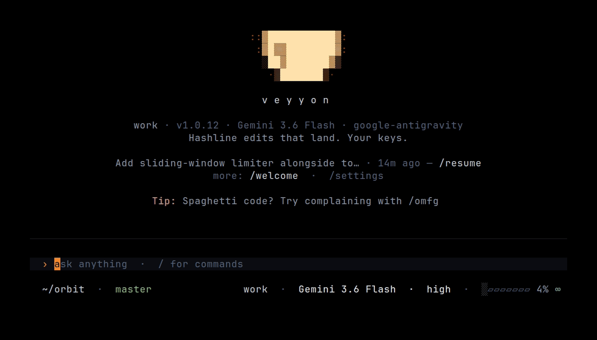

The harness, on your machine.
Same model weights succeed or fail depending on the tools, the edit format, and the control flow around them. Veyyon owns those layers as a local CLI/TUI: tool schemas, hashline edits, approval modes, compaction, context. Your provider keys, your terminal.
curl -fsSL https://get.veyyon.dev | sh

Main mechanisms
What the binary implements. Details live in the handbook under docs/handbook/.
Argot
The largest thing the fork adds (experimental). A per-project shorthand: the agent loads the project it works in with argot_load, the model writes a short handle like §dbconn where it would have written a long string it repeats, and Veyyon restores the full text before anything runs or is shown. The round trip is lossless, encoding is gated per model and by context size, and the generated dictionary lives in a local content-keyed cache, never committed. Enable with argot.enabled. See handbook: Argot.
Hashline edits
Edits reference content-hash anchors from read / grep. Verification runs before write. Stale tags return tool errors. Separate schema repair may rewrite tool JSON before validation.
Plan mode
Engine mode that drafts a plan file and uses resolve for plan approval before normal mutation resumes. Toggle with /plan; setting plan.enabled.
Models and roles
Interactive model via /model, stored as modelRoles.default. Optional roles (smol, slow, plan, …). subagent.model and compaction.model override when set. Schema default for tools.approvalMode is yolo.
Compaction and sessions
compaction.strategy is handoff or snap (default snap). Threshold via compaction.thresholdPercent. Sessions are append-only JSONL; /tree, /branch, /fork navigate the tree. Memory backends are opt-in (memory.backend).
Approvals (not OS sandbox)
tools.approvalMode: plan, ask, auto-edit, yolo (schema default yolo). No Landlock/seccomp/Seatbelt confinement. Task isolation (task.isolation) is optional CoW for subagent worktrees.
Subagents and status
task spawns workers; /cockpit lists agents; status line segments are configurable. See handbook multi-agent and task docs.
Stack and loop
Code paths, not metaphors.
AgentSession tool loop
Model stream → tools (read, bash, edit, …) → results → next turn. Plan/goal/vibe modes change tools and prompts in the engine. /review and advisor are separate surfaces.
Bun/TypeScript + Rust natives
CLI, TUI, providers, and session loop are TypeScript on Bun. Grep, PTY/shell, hashline apply, and related hot paths use @veyyon/natives.
MCP, skills, hooks
User/project MCP JSON, filesystem skills, TypeScript hooks, plugins. Non-interactive: veyyon --print.
Providers and config
Catalog providers (Anthropic, OpenAI, Google, Groq, OpenRouter, …) and local discovery (Ollama, LM Studio, llama.cpp). Credentials stay on the host for BYOK paths.
- Interactive: /model, --model; stored as modelRoles.default.
- Roles: smol, slow, plan, task, advisor, … via modelRoles.
- Overrides: subagent.model, compaction.model.
- Cycle: cycleOrder (default smol, slow).
What Veyyon is
Fork of oh-my-pi (MIT) and Pi. Local terminal coding agent: CLI/TUI, your provider credentials, tool loop, hashline edits, approval modes. Does not train weights.
What the fork adds on top: Argot, a per-project shorthand the model writes in; snap compaction with lossless dedup and artifact spill; shared credentials and global config across profiles; a per-profile working directory; an absolute-token compaction threshold; and atomic, serialized config writes. Read the Argot chapter. Config and docs: handbook. Releases: changelog.
Install and run
Install
curl -fsSL https://get.veyyon.dev | sh on Linux or macOS, irm https://veyyon.dev/install.ps1 | iex on Windows. Binary: veyyon / vey.
Auth
/login <provider> or set the provider API key env var. Local Ollama/LM Studio/llama.cpp discovery when the daemon is running.
Run
veyyon in a repo; /model selects the interactive model. Config default: ~/.veyyon/profiles/default/agent/.
Install, auth, run
One-line installer, then a provider key or a local daemon. Then vey in a repository.